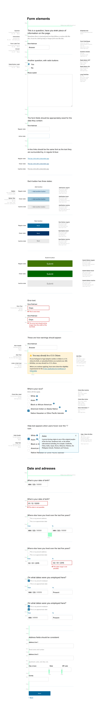
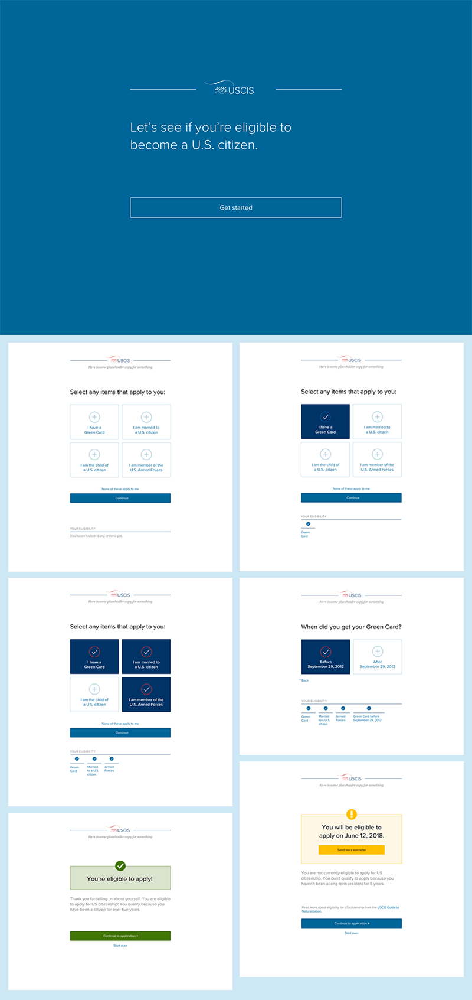
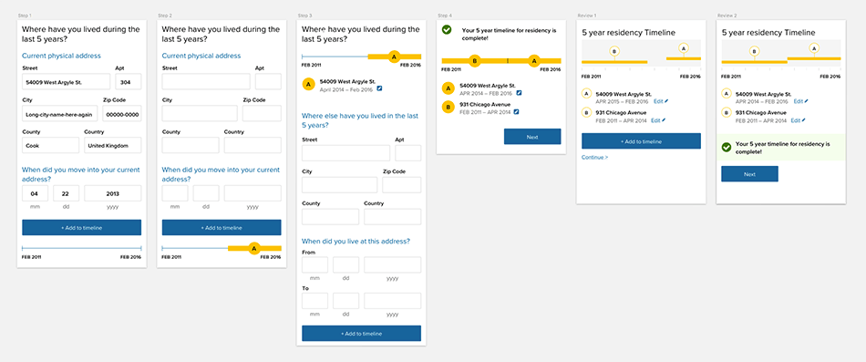
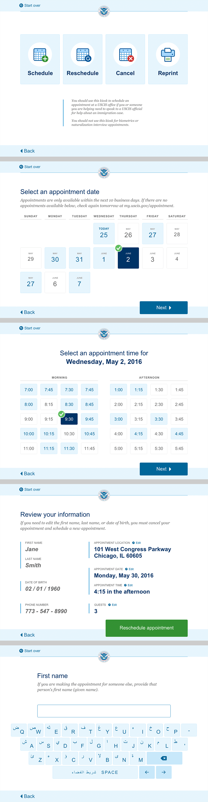

myUSCIS
On myUSCIS, our goal was to digitize the N400 Application for Naturalization—an enormous task. My primary role was visual designer, but I also pitched in as UX, illustrator and interaction designer.
Styleguide and specifications for the N400 Form
Eligibility tool comps
Visualization for a means for users to calculate residency history, for mobile
Interface design for kiosks in USCIS buildings
